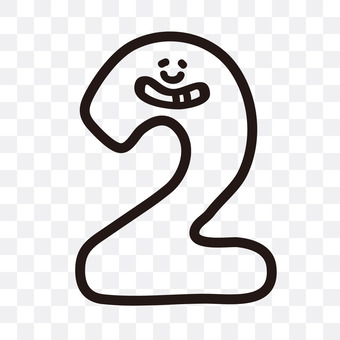
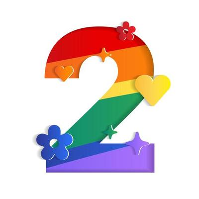

回到主頁面
薩利亞介紹
薩利亞是一家來自義大利的平價連鎖餐廳

專注提高分店的品質、服務、清潔，致力於讓每位光臨的顧客能夠心滿意足
以"提供貨真價實卻便宜的料理"成為有價值的餐廳為目標
使用中央廚房原材料降低採購成本和加工成本，使其能夠以較低廉的價格提供義式美食
致力推廣義大利美食文化
薩利亞的理念
不收10%服務費，使顧客可以使用相同的價格吃到更多的美食

有多種調味料提供顧客打造出屬於自己的味道
無套餐制度，使顧客可以自行搭配不一樣的餐點